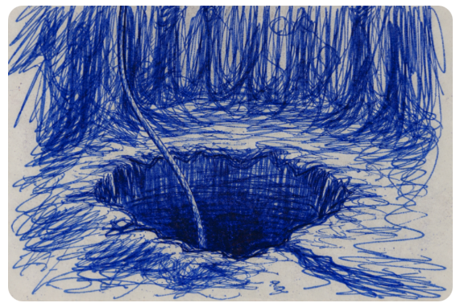

Swallowed by the Earth

While doing the first moves on dinner preperation, my sweetheart and I got a call from one of our children. He had a slightly panicked voice and informed us that his dad fell into and old well and that he needed us to help him pulling his dad out of the well. We were on our way in minutes and upon arrival found ananxious teenager, holding a rope that was wrapped around a tree in a hurry. We could hear dads voice from within the depts of earth, evaporating from a smallish hole in the soft and moist forrest floor, half confident and afraid at the same time. It seemed that the forest floor had opend under his feet, without any visible side as he stepped on the spot. The forest was dark, covered with younger trees, about a foot or less in stem diameter, close by each other, some of them firs and others oak. The forest was dark and the ground was as soft as a futon. Without loosing much time, we picked up the rope and started pulling, one of belaying the rope arround a tree as we made progress, less than an inch per pull, sometimes no progress at all. Dad at this point informed us that he had no ground under his feet and that he was half submerged in well water. The walls of the old well were pure clay soil, wet from the recent storms. Would those walls collapse and burry him in the depts of the well? He fell back down with a splash. Curses emmerged at the rim, panicky pitch. Neither of us has ever pulled on a rope harder before in our lives. We managed to pull dad out of the bowels of the forest and he is alright. It will take some time to recover.